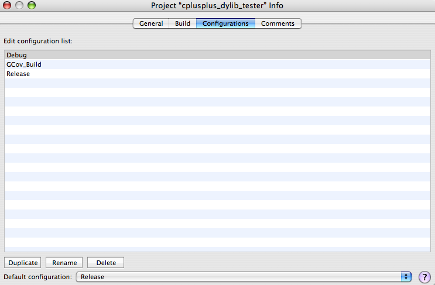
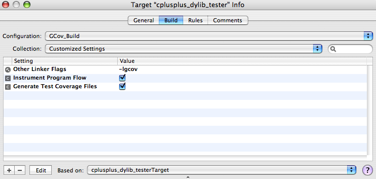

| ADC Home > Reference Library > Technical Q&As > Tools > Xcode > | |
|
Q: How can I configure my Xcode project to work with the GCOV code coverage tool?A: There are only a few steps to having your Xcode project instrumented to support the auto-generation of code coverage data supplied by GCOV. In order to keep your code coverage build separate from your Debug and Release builds, make a new build configuration called GCov_Build. To make a new build configuration from within Xcode:
Figure 1: Project Info window with new GCov_Build build configuration  To configure the project targets to work with GCOV code coverage data:
Figure 2: Target Info window with settings customized to work with GCov  For more information on GCov and using it with Mac OS X see the related Apple documentation. Document Revision History
Posted: 2007-02-23 |
|